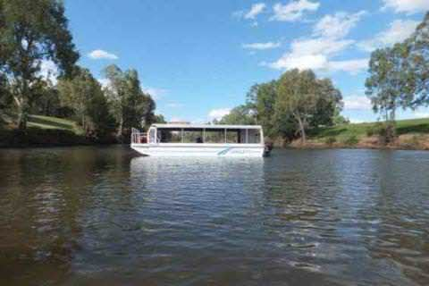
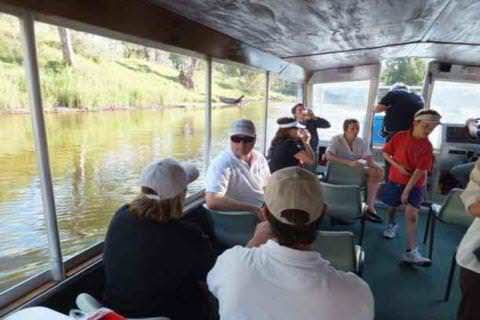

Langley's River Cruises, Dubbo
PHONE
WEB
MAIL
GET DIRECTIONS
MAKE FAVORITE


Offering tranquil cruises on the Macquarie river in Dubbo for special occasions and events, bird watching, relaxation etc. Seats up to 20 in covered seating.
OPENING HOURS:
Negotiated as part of request for booking
COORDINATES:
32º14'48.08"S, 148º35'56.58"E
BROWSE
NEARBY
FAVORITES
INFO